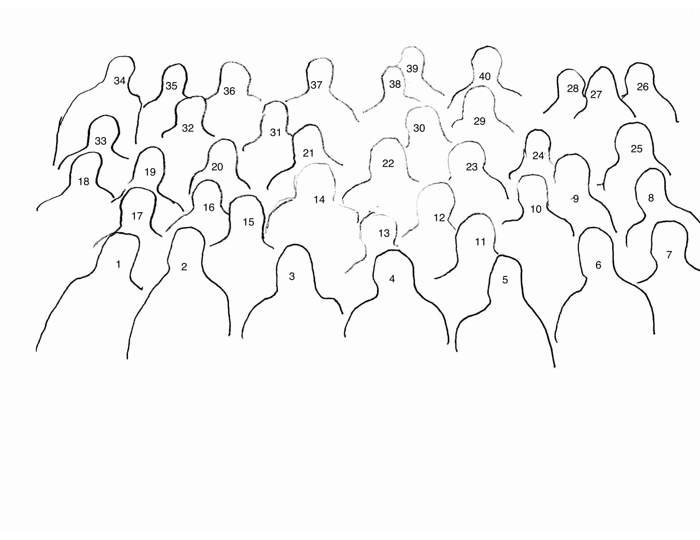

University of Illinois at Urbana-Champaign. Deparment of Economics
The Boneyard Conference
The
Boneyard Conference is an annual gathering of UIUC alumni in the field
of econometrics.
Started in 2012, it meets annually in April
Started in 2012, it meets annually in April

The 2017 Boneyard Gang

- Yannis Bilias
- Jose Machado
- Mohammed Hasan
- Antonio Galvao
- Zhijie Zhao
- Zhongjun Qu
- Naveen Narisetty
- Zhiliang Ying
- Xuming He
- Stanislav Volgushev
- Lingjie Ma
- Jiaying Gu
- Stephen Portnoy
- Chung-Ming Kuan
- Walter Sosa
- Ying Wei
- Xiaofeng Shao
- Mauricio Olivares Gonzalez
- Eunyi Chung
- Judy Wang
- Roger Koenker
- Gib Bassett
- Quanshui Zhao
- Camila Henao Arbelaez
- Julia Gonzalez
- Ivan Mizera
- Mariya Shappo
- Jungmo Yoon
- Collin Phillips
- Vinicios Poloni Saint Anna
- Ignacio Sarmiento Barbieri
- Ted Juhl
- Carlos Lamarche
- Tom Parker
- Luis Lima
- Angelo Mele
- Ryan Cummings
- JiHyung Lee